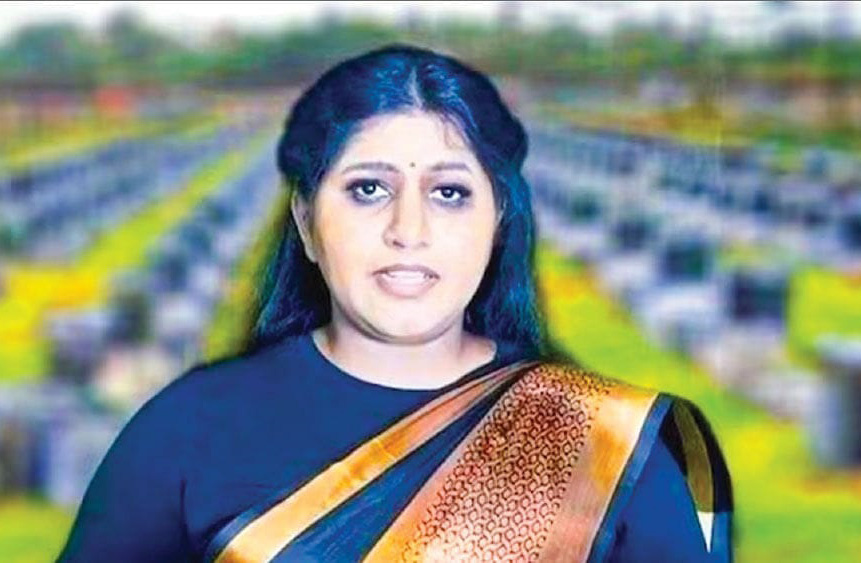
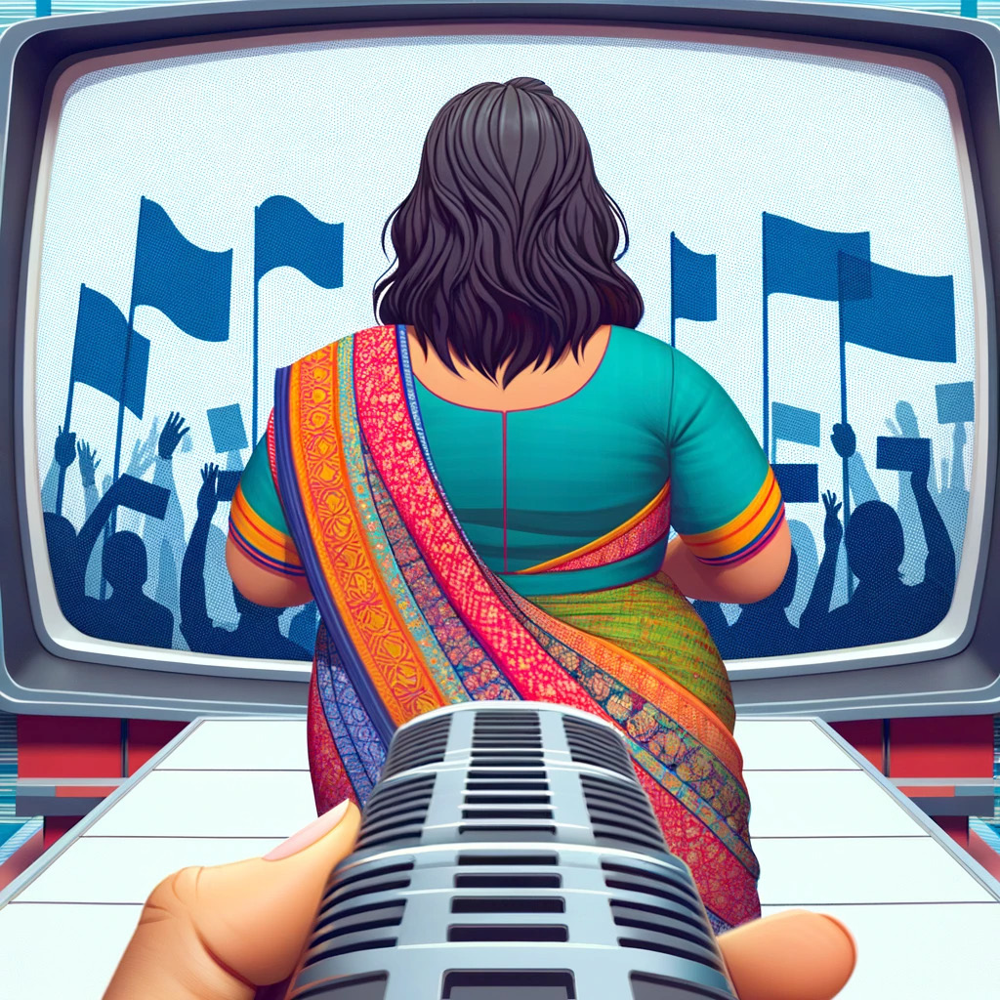

The Constructed Myth: Breaking Down the Duwaraka Video Hoax
The Constructed Myth: Breaking Down the Duwaraka Video Hoax
Jaffna Monitor hellojaffnamonitor@gmail.com 16 O n November 27, Maaveerar Naal, a video from the UK's Tamils Coordinating Committee, sparked global interest, especially in Tamil communities. It showed a woman claiming to be the daughter of the late LTTE leader Velupillai Prabhakaran. Her appearance and speech, reminiscent of Prabhakaran's Maaveerar Naal address until the LTTE's military defeat, fueled involvement in the Tamil Eelam cause. The contrast in her current and pre-2009 demeanor raised doubts and intrigue about her identity and the video's authenticity. In the video, the woman, dressed in a saree, claims that the Sri Lankan government defeated the LTTE with foreign aid, lacking courage for a direct confrontation. She argues that the LTTE's people-backed liberation struggle was strategically undermined by the government and asserts that the fight for political liberation is still ongoing. She accuses the United Nations and the international community of recognizing Sri Lanka's war crimes but not delivering justice to the Eelam Tamils. She concludes by emphasizing that, despite the end of armed conflict, the pursuit of political liberation continues, supported by Tamils in Sri Lanka, the diaspora, political figures, and ex- LTTE members. Authenticity Concerns Although the video featuring a woman claiming to be Duwaraka, daughter of the late LTTE leader Velupillai Prabhakaran, was streamed on tamiloli.net and their YouTube channel for about 10 minutes, doubts about its authenticity surfaced quickly. It is widely believed that Duwaraka was killed in the final stages of the Sri Lankan civil war in May 2009. Notably, Duwaraka's body was not retrieved by the Sri Lankan army, but numerous LTTE cadres who reportedly fought alongside her in the final battle have testified that she indeed died on the battlefield. This skepticism is compounded by warnings from Sri Lankan intelligence and foreign agencies about AI-generated videos produced by a section of LTTE functionaries, aiming to falsely portray Duwaraka as alive and to fabricate a narrative for financial gain. The Constructed Myth: Breaking Down the Duwaraka Video Hoax Written by: David Ignatius

Jaffna Monitor hellojaffnamonitor@gmail.com 17 Former LTTE members who were part of the Eelam war's final battles at Mullivaikkal expressed strong beliefs that Prabhakaran and his family achieved 'veerachavu,' a term symbolizing martyrdom. They argued that their revered leader would not have fled the war zone and, importantly, would not have attempted to make his family escape, especially when thousands of other children and parents were dying in the conflict. This belief further fueled their skepticism regarding the video purporting to feature Duwaraka, leading them to question its authenticity and the motives behind its release after 14 years. They suggested that the video could result from AI manipulation or an act by an imposter, given their conviction about the fate of Prabhakaran's family. The Announcement and Supporting Voices The claim of Duwaraka being alive was initially made public by Arunadevi Kumaradas, also known as Aruna, the elder sister of Mathivathani, in a video statement in August. She claimed to have met Prabhakaran, Mathivathani, and Dwaraka at an undisclosed location and confirmed they were safe and alive. That was supported by Indian politicians like Pazha Nedumaran and Kasi Ananthan, the Poet Laureate of Tamil Eelam. In Sri Lanka, Kandasamy Inbarasa, president of the rehabilitated Liberation Tigers of Tamil Eelam party, stood out as the sole believer in the claim of Duwaraka being alive. He expressed his support for what he referred to as the re-emergence of "Tamil Eelam's princess, Dwarka." Inbarasa was adamant that the woman in the video was indeed Dwarka and criticized skeptics as being under the influence of the Sri Lankan government. He also expressed eagerness for Prabhakaran's potential comeback and LTTE intelligence chief Pottamaman's Many cybercrime experts expressed skepticism. They pointed out several inconsistencies suggesting the use of artificial intelligence technology in its creation. They observed, "Although the language used by Duwaraka seems accurate, there are noticeable discrepancies in the movements of the mouth, face, and muscles. The video's lighting excessively focuses on the face, and the eye movements are unnaturally limited. Additionally, the hands are not clearly visible. These aspects indicate that the video was likely produced using basic technology." They regard the video as a potential case of identity theft conducted through the internet and note that it appears to have been hastily made with lower-end technology. Political commentators in conversations with Jaffna Monitor expressed skepticism regarding Duwaraka surviving the war's final days. They specifically questioned the timing of the video's release, emphasizing the point, "Why wait 14 years to appear?" if the woman in the video was indeed Duwaraka. The observers drew parallels between the enduring belief in Prabhakaran and his family's survival since 2009 among the pro-LTTE diaspora and the longstanding mystery surrounding Netaji Subhash Chandra Bose's death. Further, these analysts recognized the potential of a fraudulent syndicate operating behind the scenes, possibly using the video to exploit LTTE supporters financially. They considered the likelihood of someone falsely claiming to be Duwaraka as part of this scheme. In their concluding remarks, while they conveyed that nobody wished for her death, they firmly held on to their skepticism. They insisted on the necessity for credible evidence to verify the identity of the person in the video, maintaining that, without such proof, the claim of her being Duwaraka cannot be accepted.
